전자상거래운용사 (2007-09-01 기출문제)
1과목: 인터넷 일반
1. 다음 중 글자 크기를 설정하기 위한 태그가 아닌 것은?
- ＜B＞ ...＜/B＞
- ＜SMALL＞ ...＜/SMALL＞
- ＜BIG＞ ...＜/BIG＞
- ＜H3＞ ...＜/H3＞
(정답률: 알수없음)

2. VB스크립트에서 사용하는 프로시저에 대해서 잘못 설명된 것은?
- 프로시저를 활용하면 여러 곳에서 필요한 수정작업을 수행해야 하는 대신 프로시저 모듈내의 코드만 수정하면 되므로 수정작업이 용이해진다.
- 프로시저를 활용하면 코드의 반복을 최소화하고 재사용을 최대화 시킬 수 있다.
- 프로시저를 사용되는 것은 서브루틴에 의한 방법만 있다.
- 프로시저를 활용하면 여러 작업자가 동시에 프로시저를 작성할 수 있으므로 전체 프로그램의 완성시간을 줄일 수 있다.
(정답률: 알수없음)
3. 아래에서 서버 스크립트에 관련된 언어를 모두 고르면?
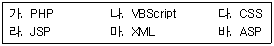
- 나, 다, 마
- 가, 나, 다
- 마, 다, 라
- 가, 라, 바
(정답률: 알수없음)
4. 전자문서의 안전성과 신뢰성을 확보하고 그 이용을 활성화하기 위하여 전자서명에 관한 기본적인 사항을 정함으로써 국가사회의 정보화를 촉진하고 국민생활의 편익을 증진함을 목적으로 제정된 법은?
- 정보화촉진기본법
- 전자서명법
- 전자거래기본법
- 정보통신기반보호법
(정답률: 알수없음)
5. 방문자가 웹 사이트 내에서 원하는 정보를 쉽게 찾도록 하기 위하여 제공하는 기능과 가장 거리가 먼 것은?
- 메뉴
- 링크
- 네트워크 구조
- 사이트 맵
(정답률: 알수없음)
6. 데이터와 데이터간의 관계를 테이블로 표현함으로써 통일적이고 단순한 데이터의 구조를 통해 데이터베이스 운용의 효율을 극대화할 수 있도록 해주는 논리적 데이터 모델은?
- 망(Network) 데이터 모델
- 계층(Hierarchical) 데이터 모델
- 관계(Relational) 데이터 모델
- 객체지향(Object-oriented) 데이터 모델
(정답률: 알수없음)
7. 다음 중 인터넷 검색엔진의 유형이 아닌 것은?
- 키워드 검색방식
- 디렉토리(주제별) 검색방식
- 메타형 검색방식
- 로봇 검색방식
(정답률: 알수없음)
8. 월드와이드웹(WWW)에 대한 설명 중 틀린 것은?
- 월드와이드웹은 인터넷상의 서비스 형태 중 하나이다.
- 텍스트와 이미지를 함께 교환할 수 있다.
- 웹은 클라이언트/서버 구조로 동작한다.
- 월드와이드웹 서버에 접근할 때는 IP 주소로만 접근할 수 있다.
(정답률: 알수없음)
9. 다음 중 네티즌이 지켜야 할 윤리 강령으로 가장 적절하지 않은 것은?
- 건전한 정보를 제공하고 올바르게 사용한다.
- 사이버 공간에 대한 자율적 감시와 비판활동에 적극 참여한다.
- 자신의 정보를 철저히 관리한다.
- 사생활 침해 방지를 위해 실명은 사용하지 않는다.
(정답률: 알수없음)
10. 프레임 타겟 설정 시, 해당 링크를 클릭 하였을 경우 현재 페이지를 무시하고 자신이 속한 윈도우의 전체 페이지에 링크된 HTML 파일을 표시해주기 위한 설정으로 맞는 것은?
- TARGET="_blank"
- TARGET="_self"
- TARGET="_parent"
- TARGET="_top"
(정답률: 알수없음)
11. 다음 중 인터넷 주소(IP4)에 대한 설명으로 잘못된 것은?
- 4개의 필드(Field)가 8bit로 구성되어 있고 32bit 주소 체계이다.
- IP 어드레스는 네트워크의 속도에 따라 A클래스에서 F클래스까지 나누어진다.
- IP 주소의 효율적인 사용을 위해 한 개의 주소를 여러 개의 주소로 나누어서 사용하는 Subnet Mask가 이용된다.
- 인터넷 IP 주소는 네트워크 주소와 호스트 주소로 구성된다.
(정답률: 알수없음)
12. 인터넷에서 아래의 기능들을 제공하는 것은 어느 것인가?
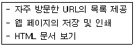
- FTP 서버
- 웹 서버(web server)
- 웹브라우저(web browser)
- 문서 편집기(word processor)
(정답률: 알수없음)
13. 다음의 CGI에 대한 설명으로 바르지 못한 것은?
- CGI는 프로그래밍 언어를 의미한다.
- HTML 형식으로 출력하려면 Content-type: text/html 헤더를 전송한다.
- 다른 파일이나 URL로 점프하려면 Location 헤더를 사용한다.
- CGI는 Common Gateway Interface의 약어이다.
(정답률: 알수없음)
14. 번호 없는 목록(UL) 태그에서 TYPE 속성의 값으로 사용할 수 없는 것은?
- CIRCLE
- DISC
- RECTANGLE
- SQUARE
(정답률: 알수없음)
15. 다음은 아웃룩 익스프레스에 대한 설명이다. 틀린 것은?
- NEWS 서버에 접속할 수 있다.
- IMAP 계정을 설정할 수 있다.
- POP3 계정을 설정할 수 있다.
- FTP 계정을 설정할 수 있다.
(정답률: 알수없음)
16. 아래는 어떠한 검색엔진을 설명하고 있는가?
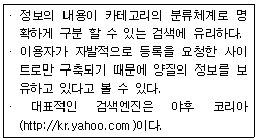
- 주제별 검색엔진
- 키워드 검색엔진
- 메타 검색엔진
- 전문 검색엔진
(정답률: 알수없음)
17. 디지털 이미지, 오디오, 비디오 등의 저작권정보를 식별할 수 있도록 특정한 부호를 표시하는 방법을 무엇이라 하는가?
- 해커(Hacker)
- 디지털 워터마크(Digital Watermark)
- 디지털 인증서(Digital Certificate)
- 디지털 서명(Digital Unterschrift)
(정답률: 알수없음)
18. 다음과 같이 프레임을 나누면 브라우저에 어떤 모양으로 나타나는가?
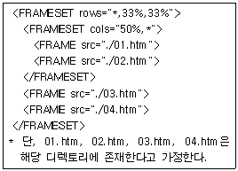
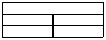
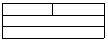
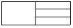
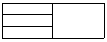
(정답률: 알수없음)
19. 다음 자바스크립트 변수명 중 바른 것은 무엇인가?
- Variable 1
- Variable_1
- Variable-1
- Variable$1
(정답률: 알수없음)
20. 테이블 내의 셀 경계선과 셀 내용 사이의 간격을 지정하기 위한 속성은 무엇인가?
- cellspacing
- cellpadding
- cellwidth
- borderwidth
(정답률: 알수없음)
2과목: 전자상거래 일반
21. 데이터베이스 마케팅의 장점으로 가장 거리가 먼 것은?
- 소비자와 기업 간의 쌍방향 의사소통 가능
- 광고전략의 수립이나 신상품 기획에 활용 가능
- 고객에 따라 차별화된 마케팅 전략 구사 가능
- 고객간의 구전 효과에 의한 저렴한 마케팅이 가능
(정답률: 알수없음)
22. 다음 물류 관련 용어의 설명이 틀린 것은?
- 조달 물류 - 조달업자로부터 생산자의 자재창고 까지 수송 및 배송하고, 입고된 자재를 보관, 재고관리 작업을 계획하고 실행, 통제
- 생산 물류 - 생산 공정이 이루어지는 콘베이어 벨트 위의 물류로서 자동물류라고도 한다.
- 판매 물류 - 제품 창고에서의 보관, 제품 출고, 배송 센터로 수송 및 배송
- 회수 물류 - 고객의 창고에서로부터 회사의 배송 센터나 제품 창고로 수송 및 입고
(정답률: 알수없음)
23. 다음에서 설명하고 있는 고객 유형으로 가장 적절한 것은?
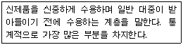
- 혁신층(innovators)
- 추종적 수용층(leggards)
- 조기 다수층(early majority)
- 후기 다수층(late majority)
(정답률: 알수없음)
24. 인터넷 비즈니스의 일반적인 수익모델(수익원)로 가장 거리가 먼 것은?
- 거래수수료
- 광고수입
- 컨텐츠 이용료
- 특허 수입료
(정답률: 알수없음)
25. 인터넷 기업은 브랜드 구축을 위해 트래픽을 증가시키고 그 효과를 지속적으로 추적 관리할 필요가 있다. 다음 중 트래픽 관리에 관한 내용으로 옳지 않은 것은?
- 도메인 네임의 선정이 트래픽 증가에 중요하게 작용한다.
- 포털 사이트에 등록하는 것이 트래픽 증가에 도움이 된다.
- 온라인 광고만을 고집하는 것은 옳지 않다.
- 웹 사이트의 컨텐츠는 트래픽을 증가시키는 요인이 되지 못한다.
(정답률: 알수없음)
26. 다음 문장의 괄호 안에 들어갈 낱말로 순서가 올바른 것은?
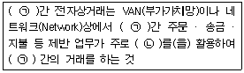
- (ㄱ) 기업, (ㄴ) CRM
- (ㄱ) 개인, (ㄴ) EDI
- (ㄱ) 기업, (ㄴ) EDI
- (ㄱ) 소비자, (ㄴ) CRM
(정답률: 알수없음)
27. 판매 시점에서 생성되는 데이터의 특성 및 활용 방향에 대한 다음 설명으로 가장 적절하지 않은 것은?
- 거래되는 상품 및 고객에 대한 세부 정보를 신속, 정확하게 파악할 수 있다.
- 상품 판매 관리에서 재고관리에 적용하지 못하는 단점이 있다.
- 판매 데이터를 이용해 고객에 관한 정보를 관리하고 이를 경영에 활용한다.
- 장바구니 분석과 같은 데이터마이닝 기법을 활용하여 고객 구매 습성을 분석하는 것을 가능하게 한다.
(정답률: 알수없음)
28. 물류관리의 기본 원칙과 가장 무관한 것은?
- 일반적으로 물류관리는 기업의 마케팅과 통합하여 관리하면 복잡도가 커진다. 따라서 분리하여 관리하는 것이 바람직하다.
- 기본적인 수송과 보관 등에 경쟁적 우위를 확보함으로써 차별적인 마케팅 활동을 수행해야 한다.
- 신속한 배송, 안전한 배달 등 고객의 다양한 욕구를 만족시켜 주는 물류관리가 필요하다.
- 전자상거래 환경에 맞는 고객 서비스 방향을 설정하고 최소의 물류비로 이를 달성할 수 있도록 물류 활동을 관리해야 한다.
(정답률: 알수없음)
29. 전자상거래의 실행을 위해 웹 사이트 구축 시 웹 사이트를 구성하는 요소로 가장 관계가 먼 것은?
- 컨셉(Concept, 웹사이트를 통해 고객에게 전달하고자 하는 개념)
- 컨텐츠(Contents, 웹사이트에서 제공하는 정보 및 서비스)
- 웹사이트 구조 및 내비게이션
- 커뮤니티
(정답률: 알수없음)
30. 디지털 상품을 대상으로 한 비즈니스 모델로 가장 적절하지 않은 것은?
- VOD(Video on Demand)
- 인터넷 서점(온라인 서점)
- MP3 음악 파일 제공
- 온라인 교육 프로그램
(정답률: 알수없음)
31. 다음 문장의 빈칸에 들어갈 단어들이 올바르게 연결된 것은?
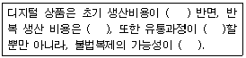
- 높은-낮다-단순-높다
- 낮은-높다-복잡-낮다
- 높은-낮다-복잡-낮다
- 낮은-높다-단순-높다
(정답률: 알수없음)
32. 다음에서 인터넷을 이용한 상거래의 특징을 모두 고른 것은?
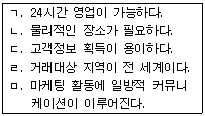
- ㄱ, ㄴ, ㄷ
- ㄱ, ㄷ, ㄹ
- ㄴ, ㄷ, ㄹ
- ㄷ, ㄹ, ㅁ
(정답률: 알수없음)
33. 물류의 새로운 개념으로 공급자 주도 재고관리가 확산되고 있다. 다음 중 공급자 주도의 재고관리로 보기 어려운 것은?
- QR (Quick Response)
- AR (Automatic Replenishment)
- CR (Continuous Replenishment)
- EOQ (Economic Order Quantity)
(정답률: 알수없음)
34. 전자지불대행서비스에 대한 설명으로 옳은 것은?
- 전자지불대행서비스는 쇼핑몰 구축 시 별도의 지불시스템을 개발할 필요가 없게 한다.
- 독자지불서버나 SET 방식에 비해 상대적으로 신용카드 결제 수수료가 낮다.
- 신용카드 지불처리가 한 상점으로 제한되지 않는다.
- 지불대행서비스 회사는 상대적으로 낮은 신뢰도를 가진 회사이다.
(정답률: 알수없음)
35. 고객관계관리(CRM)에 대한 설명 중 옳지 않은 것은?
- 통합된 영업, 마케팅 및 고객서비스 전략이다.
- 고객의 과거 이력 정보를 많이 사용한다.
- CRM은 데이터마이닝(Data Mining) 기법 등을 활용한다.
- 원재료 조달 업무의 효율성과 효과성을 향상하는 기법이다.
(정답률: 알수없음)
36. 다음에서 전자상거래상의 판매관리 특징을 모두 고른 것은?
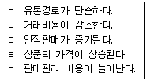
- ㄱ, ㄴ
- ㄱ, ㄷ
- ㄴ, ㄷ
- ㄷ, ㄹ
(정답률: 알수없음)
37. CPM(Cost Per Mile), CPD(Cost Per Download)와 가장 관련이 있는 분야는?
- 제품개발
- 원가관리
- 광고가격 결정
- 제품가격 설정
(정답률: 알수없음)
38. Blake Ives는 고객 서비스에 대해서 CSLC(Customer Service Life Cycle)라는 개념으로 설명하고 있다. 이는 고객이 제품/서비스를 구매해서 폐기할 때까지의 과정을 Requirement(요구)-Acquisition(구입)-Ownership(소유)-Retirement(폐기)의 네 단계로 구분하고 필요한 서비스에 대해서 지적한 것이다. 다음 중 Ownership (소유) 단계의 고객 서비스 대상으로 보기 어려운 활동은?
- 제품 가격지불
- 제품 유지보수
- 제품 활용
- 제품 업그레이드
(정답률: 알수없음)
39. 향후 예견되는 디지털 네트워크 경제에 대한 설명으로 거리가 먼 것은?
- 소비와 수요가 증대될수록 가격이 하락하는 특성을 가진 디지털 상품이 늘어난다.
- 정보기술(IT)산업의 경제성장 기여율이 점차 감소한다.
- 산업의 서비스화, 소프트화가 진전된다.
- 정보격차(Digital divide)와 정보 불평등이 소득격차로 연결될 가능성이 크다.
(정답률: 알수없음)
40. 배송의 목적 및 역할에 대한 다음 설명 중 가장 거리가 먼 것은?
- 고객이 주문한 상품을 정확하게 전달해 주는 것을 의미한다.
- 저렴하면서도 정확하고 신속한 전달을 목적으로 한다.
- 상품에 하자가 있을 경우 이를 반품하는 과정도 포함된다.
- 저렴한 배송을 위하여 배송추적이 필요하다.
(정답률: 알수없음)
3과목: 컴퓨터 및 통신 일반
41. TCP/IP에 대한 설명으로 틀린 것은?
- TCP는 메시지나 파일들을 좀더 작은 패킷으로 나누어 인터넷을 통해 전송하는 일과 수신된 패킷들을 원래의 메시지로 재조립하는 일을 담당한다.
- IP는 각 패킷의 주소 부분을 처리함으로써 패킷들이 목적지에 정확하게 도달할 수 있게 한다.
- TCP/IP는 3개의 층으로 구성되는데 어플리케이션층, 트랜스포트층, 네트워크층이다.
- 어플리케이션층은 telnet, SMTP 등의 서비스를 제공한다.
(정답률: 알수없음)
42. 다음 중 입출력 장치가 아닌 것은?
- 모니터
- 스캐너
- 마우스
- 레지스터
(정답률: 알수없음)
43. IP에 대한 설명으로 틀린 것은?
- TCP/IP 호스트를 인식하는 32 비트 주소이다.
- 컴퓨터의 각 네트워크 어댑터에는 고유 IP 주소가 필요하다.
- IP는 네트워크 부분과 호스트 부분으로 구성된다.
- 모든 IP 주소는 DHCP 서버에서 자동으로 부여 받는다.
(정답률: 알수없음)
44. 다음 중 인터넷에서 사용되고 있는 대표적인 표준 통신 프로토콜은 무엇인가?
- RS-232C
- RS-232D
- TCP/IP
- BPS
(정답률: 알수없음)
45. 다음 중 멀리 떨어진 장소에서 컴퓨터나 네트워크에 접속할 수 있고, 퇴근해서도 자신이 속한 네트워크에 원격적으로 접근할 수 있도록 하는 것은?
- ISP(Internet Service Provider)
- DSL(Digital Subscriber Line)
- RAS(Random Access Server)
- FTP
(정답률: 알수없음)
46. 다음은 머천트(Merchant)서버의 어떤 구성요소를 말하는가?
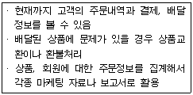
- 관리 및 정산 프로그램
- 프로모션 관리 프로그램
- 고객관리 프로그램
- 장바구니 관리 프로그램
(정답률: 알수없음)
47. 컴퓨터 바이러스에 대한 설명으로 틀린 것은?
- 바이러스 스스로 복제해가며 파일이나 데이터를 파괴하기도 한다.
- 컴퓨터 처리속도를 저하시키거나 오동작을 일으키게 한다.
- 컴퓨터의 일부 장치를 인식하지 못하게 한다.
- 실행 파일만 감염시킨다.
(정답률: 알수없음)
48. 인터넷 서비스는 기본서비스, 뉴스서비스 그리고 정보검색 서비스 유형으로 구분할 수 있다. 다음 중에서 정보검색서비스 유형을 열거한 것으로 가장 거리가 먼 것은?
- Archie
- Gopher
- Usenet News
- WAIS
(정답률: 알수없음)
49. 많은 뉴스를 제공하는 뉴스 서버로부터 뉴스를 다운로드 받기 위해 필요한 프로토콜은?
- POP
- SMTP
- NNTP
- FTP
(정답률: 알수없음)
50. 클라이언트/서버에서 사용자가 서버에 요구할 수 있는 기능이 아닌 것은?
- 파일 공유
- 프린터 공유
- 서버 교체
- 데이터베이스 접근
(정답률: 알수없음)
51. 다음 중 인터넷의 시초가 된 네트워크는 무엇인가?
- BITNET
- MILNET
- NSFNET
- ARPANET
(정답률: 알수없음)
52. UTP(Unshielded Twisted-Pair) 케이블에 대한 다음 설명 중에서 가장 옳지 않은 것은?
- 이더넷 형 LAN에 많이 사용된다.
- 카테고리 3은 100Mbps에, 카테고리 5는 10Mbps에 많이 사용된다.
- 장치들간의 연결은 RJ-45 커넥터를 이용한다.
- 가격이 저렴하고 설치가 간편하다.
(정답률: 알수없음)
53. IMT-2000에서 제공하는 서비스가 아닌 것은?
- 기본서비스로 사용자 등록서비스와 단말위치등록서비스 등이 있다.
- 베어러서비스로 지하 시설물 추적 인터페이스를 제공한다.
- 텔레 서비스로 고품질 음성서비스 및 동화상서비스를 제공한다.
- 부가서비스로 회의통화서비스와 위치추적서 비스를 제공한다.
(정답률: 알수없음)
54. 다음 중 새로운 주변기기를 컴퓨터에 설치한 다음에 곧바로 사용할 수 있는 Windows의 기능은 무엇인가?
- 디바이스 드라이버 (Device driver)
- 유틸리티 소프트웨어 (Utilities software)
- 백신 소프트웨어 (Vaccine software)
- 플러그 앤 플레이 (Plug and Play)
(정답률: 알수없음)
55. 전자결제를 위한 전자인증서(digital certificate)의 구성 요소로만 묶여진 것은?
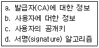
- a, b, c, d
- a, b, c
- a, b
- a
(정답률: 알수없음)
56. 다음 중 운영체제가 하는 일로 옳지 않은 것은?
- 사용자가 컴퓨터와 대화할 수 있도록 인터페이스를 제공한다.
- 사용자를 위해 고급 프로그래밍 언어를 번역해준다.
- 컴퓨터 하드웨어가 효율적으로 사용될 수 있도록 관리한다.
- 응용 프로그램의 수행을 도와준다.
(정답률: 알수없음)
57. 다음 중 통신망의 종류와 특징이 바르지 못한 것은?
- LAN(근거리통신망) - 제한된 지역 내에 있는 독립된 컴퓨터 기기들로 하여금 서로 통신이 가능하도록 하는 데이터 통신 시스템이다.
- MAN(도시통신망) - 도시 전체를 대상으로 구축하는 네트워크이다.
- WAN(광역 통신망) - SMDS(교환 다중 메가비트 데이터 서비스)를 제공한다.
- ISDN(종합정보통신망) - 기존의 전화서비스를 제공하는 전화교환망에 디지털기능을 추가하여 새로운 통신 서비스를 제공한다.
(정답률: 알수없음)
58. 네트워크에 침입하는 유형이 다양해지면서 보안 문제가 크게 대두되고 있다. 해킹 유형 중에서 특정한 호스트에 접속할 수 있는 IP 주소로 자신을 위장한 다음에 해당 호스트의 자료를 열람하거나 파괴하는 행위를 무엇이라고 하는가?
- 스니핑 (Sniffing)
- IP 스푸핑 (IP Spoofing)
- 크래킹 (Cracking)
- 클리퍼 칩 (Clipper chip
(정답률: 알수없음)
59. 전화선으로 연결된 통신망을 이용하기 위해서 디지털(digital) 신호를 아날로그(analog) 신호로 변환하기 위해 사용되는 통신 기기는 다음 중 어느 것인가?
- 라우터(router)
- 모뎀(modem)
- 브리지(bridge)
- 코덱(codec)
(정답률: 알수없음)
60. 다음 중 여러 명의 사용자들을 한 번에 수용하기 위해 각 사용자들이 작업하는 프로그램을 빠른 주기를 교대로 실행시킴으로서 마치 개개인이 독립적으로 시스템을 사용한다는 느낌을 갖게 하는 방식은?
- 일괄처리 시스템(batch processing)
- 실시간 처리 시스템(real time processing)
- 시분할 시스템(time sharing system)
- 다중처리(multi processing)
(정답률: 알수없음)
"＜B＞ ...＜/B＞"는 Bold(굵은 글씨)를 나타내는 태그입니다.
"＜SMALL＞ ...＜/SMALL＞"은 작은 글씨를 나타내는 태그입니다.
"＜BIG＞ ...＜/BIG＞"는 큰 글씨를 나타내는 태그입니다.
하지만 "＜H3＞ ...＜/H3＞"은 제목(Heading)을 나타내는 태그이며, 글자 크기를 설정하는 태그는 아닙니다.